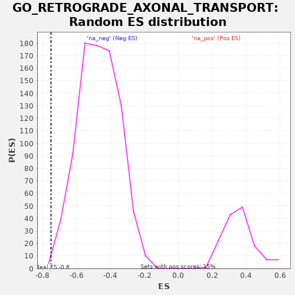

| | | Dataset | PRAD |
| Phenotype | NoPhenotypeAvailable |
| Upregulated in class | na_neg |
| GeneSet | GO_RETROGRADE_AXONAL_TRANSPORT |
| Enrichment Score (ES) | -0.75038165 |
| Normalized Enrichment Score (NES) | -1.5994798 |
| Nominal p-value | 0.0023446658 |
| FDR q-value | 0.0331724 |
| FWER p-Value | 0.964 |
Table: GSEA Results Summary
 Fig 1: Enrichment plot: GO_RETROGRADE_AXONAL_TRANSPORT
Fig 1: Enrichment plot: GO_RETROGRADE_AXONAL_TRANSPORT
Profile of the Running ES Score & Positions of GeneSet Members on the Rank Ordered List
| PROBE | GENE SYMBOL | GENE_TITLE | RANK IN GENE LIST | RANK METRIC SCORE | RUNNING ES | CORE ENRICHMENT | | 1 | SOD1 | | | 1769 | 24.334 | -0.0069 | No |
| 2 | KIF5B | | | 8127 | 0.870 | -0.2314 | No |
| 3 | DLG2 | | | 9547 | 0.116 | -0.2817 | No |
| 4 | KIF1A | | | 10364 | -0.166 | -0.3104 | No |
| 5 | KIF1B | | | 11038 | -0.631 | -0.3329 | No |
| 6 | KIF1C | | | 11637 | -1.200 | -0.3515 | No |
| 7 | SNAPIN | | | 12387 | -2.067 | -0.3734 | No |
| 8 | TMEM108 | | | 22967 | -33.429 | -0.6732 | Yes |
| 9 | NDEL1 | | | 23716 | -37.352 | -0.6137 | Yes |
| 10 | PAFAH1B1 | | | 24009 | -39.218 | -0.5336 | Yes |
| 11 | MAP1A | | | 25546 | -50.360 | -0.4721 | Yes |
| 12 | MGARP | | | 25614 | -50.866 | -0.3571 | Yes |
| 13 | KIF5A | | | 25784 | -52.353 | -0.2423 | Yes |
| 14 | DST | | | 27222 | -69.721 | -0.1326 | Yes |
| 15 | HAP1 | | | 27281 | -70.650 | 0.0283 | Yes |
Table: GSEA details [plain text format]

Fig 2: GO_RETROGRADE_AXONAL_TRANSPORT: Random ES distribution
Gene set null distribution of ES for GO_RETROGRADE_AXONAL_TRANSPORT